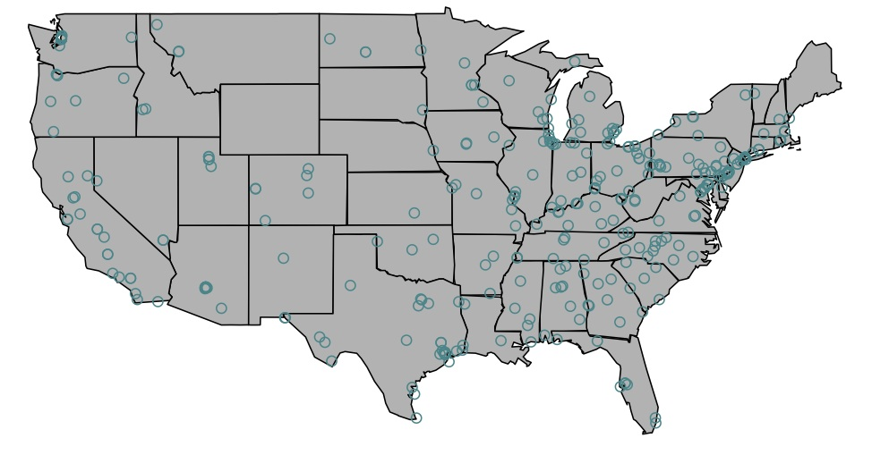
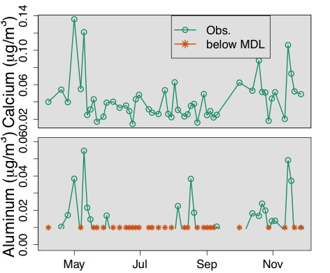
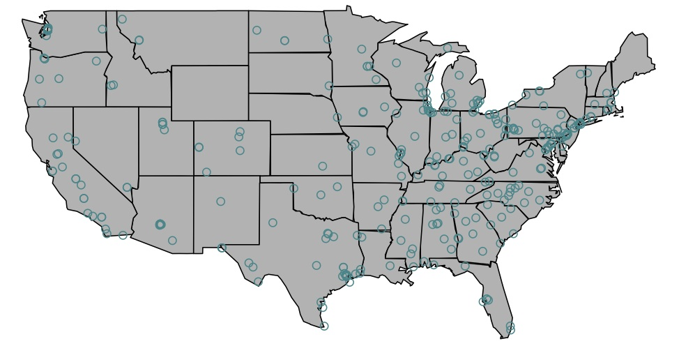
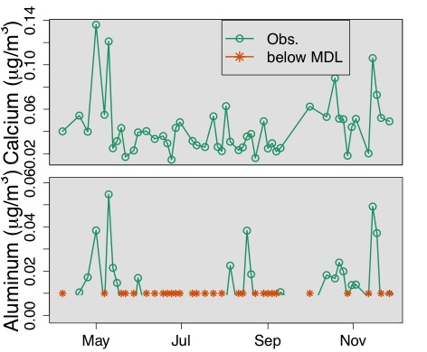

I am primarily interested in developing statistical methods for estimating exposure to and evaluating health effects of particulate matter air pollution. You can find information about my aging-related research here.
Short-term exposure to particulate matter constituents and mortality in a national study of U.S. urban communities (2013) Environmental Health Perspectives

PM2.5 chemical constituent monitors available from the US EPA chemical speciation network
Estimating the health effects of particulate matter constituents: accounting for spatial misalignment in a national study of U.S. mortality (in preparation)
Censoring adjustment methods for source apportionment models (in preparation)

A method to combine information across locations for estimating regional associations between particulate matter sources and mortality (in preparation)
Examining the dynamic, bidirectional associations between cognitive and physical functions (in preparation)
Short-term exposure to particulate matter constituents and mortality in a national study of U.S. urban communities (2013) Environmental Health Perspectives
- We estimated associations between short-term exposure to particulate matter (PM) chemical constituents and mortality across the US. Our work focused on seven constituents that contribute most to PM by mass or covary most with PM: elemental carbon, organic carbon matter, silicon, sodium ion, nitrate, sulfate, and ammonium. We also estimated mortality effects for each constituent by season and by region. This was the first national-level study of PM chemical constituents and mortality in the U.S.

PM2.5 chemical constituent monitors available from the US EPA chemical speciation network
Estimating the health effects of particulate matter constituents: accounting for spatial misalignment in a national study of U.S. mortality (in preparation)
- In studies of short-term associations between PM and health, data frequently include health outcome measures aggregated over communities and point measures of PM from ambient monitors. This difference in spatial resolution is referred to as spatial misalignment. In order to obtain community-level exposure estimates of PM to match available health data, researchers frequently average PM concentrations from ambient monitors. However, for the study of PM chemical constituents, monitoring data are spatially sparse and many communities only have one monitor. Additionally, some chemical constituents of PM have high spatial variability and therefore point-level concentrations may be poor estimates for ambient average PM concentrations. Exposure estimated using the average of monitor observations may lead to different estimated associations between PM constituents and health compared with an approach that uses spatial information about the constituent. We fitted spatial models to the PM constituent concentrations and demonstrated that the method used to align PM and health data can impact estimated health effects.
Censoring adjustment methods for source apportionment models (in preparation)
- The chemical compostition of different sources of PM and the daily concentrations of PM sources are not generally known and must be inferred from PM chemical constituent data using source apportionment models. However, many constituents have concentrations that fall below minimum detection limits (MDL) and source apportionment models cannot generally handle missing data. Researchers frequently substitute concentrations below the MDL using a proportion of the MDL or by removing data. It is not known whether these methods are sufficient in source apportionment analyses or whether a more sophisticated model is needed. For example, in the figure below, calcium is completely observed while aluminum frequently has concentrations that fall below the MDL. Estimation of a soil source containing both aluminum and calcium may depend on how censored aluminum concentrations are handled. In this work, we demonstrated with a simulation study and data from New York City that the method used to adjust censored data can have an impact on source estimation. We also developed a likelihood-based imputation model that frequently improves source estimation when data are censored.

A method to combine information across locations for estimating regional associations between particulate matter sources and mortality (in preparation)
- Source apportionment studies generally estimate PM sources at one or several monitors because standard methods do not exist for combining source apportionment results across locations. The chemical composition of PM sources vary spatially and so care must be taken when pooling information about PM sources across multiple monitors. Most commonly applied methods assume the sources are the same between multiple monitors or rely on ad-hoc approaches to determine which sources are shared between monitors. We developed a method to combine sources across multiple monitors that allows the sources to vary between monitors. Using our method, we estimated associations between PM sources and mortality across the northeastern US.
Examining the dynamic, bidirectional associations between cognitive and physical functions (in preparation)
- Using data from the Women's Health and Aging Study II, a prospective cohort study of community-dwelling, non-disabled women at baseline, we examined the associations between cognitive and physical functioning. Existing biological hypotheses support associations of physical function with subsequent cognitive function and vice versa. We applied structural equation models to our data to simultaneously assess both directions of the cognitive-physical function association. Our model is depicted below, where for six study visits, physical function (y) is associated with subsequent physical function and subsequent cognitive function (x).